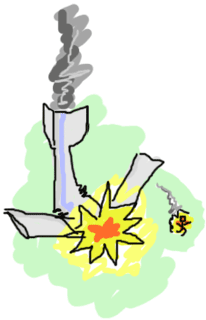

Giới thiệu
Giới thiệu
Khi bạn đang đọc tới những dòng chữ này có nghĩa là bạn bắt đầu tìm hiểu về ngôn ngữ lập trình Erlang, Vậy Erlang là gì ?

Đầu tiên, Tôi bắt đầu lên ý tưởng viết bài này sau khi đọc Learn You a Haskell for great Good! (LYAH) của Miran Lipovača; tôi nghĩ rằng anh ấy đã thành công khi làm cho ngôn ngữ hấp dẫn và trải nghiệm việc học trở lên thân hiên hơn. Như tôi đã biết về anh ấy, tôi đã hỏi anh ấy cảm nhận về việc tôi đang viết một phiên bản về Erlang dựa trên bản Haskell của anh ấy. He ấy đã rất thích ý tưởng đó , being somewhat interested in Erlang.
Vây nên tôi đang dánh máy để viết bài này. Tất nhiên cũng có một số nguồn khác thúc đẩy tôi nữa: Lí do chính là tôi thấy tiếp cận tới ngôn ngữ này khá khó( tài liệu trên web thưa thớt, mặt khác để tìm học bạn cần phải mua sách), and tôi nghĩ rằng công đống sẽ được hưởng lợi từ hướng dẫn giống LYAH. Less importantly, I've seen people attributing Erlang too much or not enough merit sometimes based on sweeping generalizations. Then there are people who sure as hell believe Erlang is nothing but hype. If I'd like to convince them otherwise, I know they're not likely to read this in the first place.
This book thus wants itself to be a way to learn Erlang for people who have basic knowledge of programming in imperative languages (such as C/C++, Java, Python, Ruby, etc) and may or may not know functional programming (Haskell, Scala, Erlang, Clojure, OCaml...). I also want to write this book in a honest manner, selling Erlang for what it is, acknowledging its weaknesses and strengths.
Erlang là gì?
Trước tiên, Erlang là một ngôn ngữ lập trình hàm, một ngữ ngữ lập trình dựa trên toán học. nếu bạn đã từng làm việc với các ngôn ngữ lập trình mệnh lệnh trước đó, bạn sẽ khá thân thuộc với các câu lệnh i++ nhưng trong ngôn ngữ lập trình hàm thì chúng không đuợc phép. và thực tế thay đổi giá trị của biến bất kỳ nào đều bị nghiêm cấm. Nghe có vẻ kỳ lạ nếu bạn đến từ các ngôn ngữ lập trình mệnh lệnh hay hướng đối tượng thì thay đổi giá trị một biến hoàn toàn bình thường nhưng nếu bạn nhớ lại toán học bạn đã tưng học ở trường, bạn đã đựoc dạy:
y = 2 x = y + 3 x = 2 + 3 x = 5
Sau đó tôi sẽ thêm:
x = 5 + 1 x = x ∴ 5 = 6
Oh, 5 = 6 có điều gì đó sai sai, bạn sẽ cảm thấy rất bối rối, lập trình hàm ghi nhận: nếu tôi nói x bằng 5, thì tôi không thể bảo nó cũng bằng 6 được! Nếu nó cũng bằng 6 là không hợp lí. hãy liên hệ với toán học , trong một bài toán khi một biến đựoc gán với một giá trị rồi thì đó là giá trị duy nhất và không thay đổi, đó cũng là lý do vì sao một hàm có cùng tham số nên luôn trả về cùng một kết quả:
x = add_two_to(3) = 5 ∴ x = 5
Những hàm luôn trả về cùng một kết quả với cùng tham số đựoc gọi là tham chiếu minh bạch ( Referential transparency ), và bạn lên ghi nhớ vì sau này bạn sẽ còn gặp rất nhiều không chỉ trong hướng dẫn này mà còn trong các hướng dẫn và sách khác nữa. Do đó với kết quả phía trên khi ta thay thế hàm add_two_to(3) bằng 5, kết quả của phép tính 3+2 sẽ luôn bằng 5. Điều này càng có nghĩa chắc chắn hơn nếu ta gộp 1 tá các hàm lại cùng nhau theo thứ tự để giải quyết các vấn đề phức tạp hơn mà không ảnh hưởng tới kết quả. Tuy vậy có một vấn đề ở đây:
x = today() = 2009/10/22 -- wait a day -- x = today() = 2009/10/23 x = x ∴ 2009/10/22 = 2009/10/23
Oh không, có vẻ đột nhiên tất cả những gì mà đã nói lúc trước về hàm có cùng tham số thì kết quả trả về là như nhau , nhưng trong truòng hợp thì không đúng, vậy làm thế nào mà mà kết quả hàm của tôi lại khác nhau sau mỗi ngày ?
Rõ ràng, có một số trường hợp vi phạm quy tắc của tham chiếu minh bạch. Do đó, Erlang có một cách giải quyết vấn đề này cùng với lập trình hàm: dựa trên một tập các nguyên tắc thuần nhất (tham chiếu mình bạch, tránh thay đỏi dữ liêu,... ), but break away from them when real world problems pop up.
chúng ta đã xác định Erlang như là một ngôn ngữ lập trình hàm, nhưng cũng đồng thời nhấn mạnh về tính đồng thời (concurrency) và độ ổn định cao (high reliability). xét về tính dồng thời để có thể thực hiện một tá các công việc tại cùng một thời điểm, Erlang sử dụng một mô hình actor model, trong mô hình này mỗi một actor là một tiến trình tách biệt trong máy ảo. Tóm lại theo một cách cụ thể, nếu bạn là một actor trong thế giới của Erlang, hãy hình dùng bạn sẽ là một người cô độc sống tách biết với thế giới, xung quanh bạn chỉ có màn đêm với bốn bức tường và một hòm thư, bạn sẽ chờ để nhận những bức thư được gưi đén hòm thứ của bạn và phản hồi chúng tùy theo nội dung của mỗi bức thư: vd nếu bạn nhận được một bức kèm với nội dung là hóa đơn tiền điện bạn sẽ phản hồi bằng cách thanh toán hóa đơn đó, hay như nhận được một tấm thiệp sinh nhật của một người, bạn sẽ phải phản hồi lại cùng với lời nhắn "Cám ơn" và bạn có thể bơ nếu như đó là những bức thư mà bạn không quan tâm hay chẳng thể hiểu được.
thông qua actor model của Erlang bạn có thể được hình dung như một thể giới nơi mà mỗi người đang ngồi một mình trong căn phòng của riêng họ và thực hiện một vài công việc khác nhau . Mỗi người họ giao tiếp hạn chế với nhau qua những bức thư. Nghe có vẻ một cuộc sống tẻ nhạt( một kỷ nguyên mới cho dịch vụ bưu chính ), điều đó có nghĩa là bạn có thể hỏi rất nhiều người làm các công việc cụ thể danh cho bạn, và không một ai trong số họ có thể sè làm ảnh hưởng tới công việc của người khách nếu họ làm sai điều gì hay mắc sai nhầm ; bởi vì họ chỉ có thể làm công việc của họ với bạn ( 1 - 1 ) và họ không biết sự tồn tại của những người khác ngoài bạn ra ( thật tuyệt ) và nó là cách bạn tránh dược việc xung đột công việc giữa các người khác ( race condìtion ).
To escape this analogy, Erlang buộc bạn phải viết các actors ( tiến trình ) không chia sẻ bất kỳ thông tin nào cùng với các mã bit khác nhau trừ khi chúng chuyển tin nhắn cho nhau. Mọi sự giao tiếp phải minh bạch, có thể truy xuất nguồn gốc và an toàn.
khi chúng ta nói về Erlang, là nói tới ở cấp độ ngôn ngôn ngữ, nhưng theo nghĩa rộng hơn, Erlang không chỉ có vậy: bản thân Erlang cũng là một môi trường phát triển. Mã code thì được biện dich với bytecode và chạy trong một máy ảo ( beam virtual machine ). vì vậy Erlang khá giống so với Java và những đứa trẻ mắc bệnh rối loạn thiếu khả năng chú ý ( ADD ), chúng có thể chạy ở mọi môi trường. The standard distribution bao gồm công cụ phát triển ( trình biên dịch (compiler) , công cụ gỡ lỗi (debugger), coong cụ giàm sát (profiler), )(compiler, debugger, profiler, thư viện kiểm tra ( test framework) ), the Open Telecom Platform (OTP) Framework, web server, phân tích cú pháp ( parser generator ), cơ sở dữ liệu mnesia, một hê thống lưu trữ theo cấu trúc cặp khóa - giá trị ( key-value ) và có thể lưu trữ các bản sao của nó trên nhiều server khác nhau, hỗ trợ các giao dịch lồng nhau và lưu trữ nhiều loại kiểu dữ liệu khác nhau của Erlang, chúng ta sẽ có hẳn một chương dành riêng cho Mnesia.
Máy ảo và thư viên của Erlang cho phép bạn cập nhật đoạn mã mới cho chương trình ngay trên hệ thống đang chạy mà không phải dừng lại hay gián đoạn ( nếu bạn tiếp cận vvới phương pháp triển khai blue-green rồi bạn sẽ thấy có nét khá gióng) ,hay dễ dàng phân phối các đoạn mã chương trình dễ dàng trên nhiều máy tính cũng như quản lí lỗi. 
Các phần sau của sách chúng ta sẽ nhìn nhận về cách sử dung các công cụ và độ ổn đinh, nhưng giờ ,tôi sẽ nói về một quy tắc chung trong Erlang: Let it crash. Để minh họa, có thể hình dung bạn giống như một diễn viên xiếc đi dây thằng bằng , phía dưới là một tấm lứoi bảo vệ thay vì là những hành khách sắp trên nạn trên môt chiếc máy bay gặp tai nạn. Thông thương để kiểm soát lỗi trong chương trình bạn sẽ thường phải kiểm tra kỹ và có thể sẽ bắt các exception với với nhiều trường hợp để tránh lỗi làm hỏng toàn bộ chương trình, nhưng trong Erlang bằng việc áp dụng `let it crash` bạn sẽ không cần quan tâm tới việc kiểm tra từng kiểu dữ liệu hay điều kiện gây ra lỗi trong hầu hết các trường hợp.
Actor Erlang hay máy ảo Erlang có khả năng phục hồi lại trạng thái ban đầu nếu xảy ra lỗi, cùng với actor cũng , và chúng ra sẽ đi sâu hơn trong các phần sau...
Đừng uống quá nhiều Kool-Aid
Drinking the Kool-Aid là một cụm từ mỉa mai được sử dụng phổ biến ở Mỹ, Xuyên suốt cuốn sách bạn sẽ thấy có rất nhiều mục được bôi màu vàng-cam cùng dòng chữ giống vậy, Trích dẫn `No Silver Bullet` từ tác gỉa Turing Award, mặc dù Erlang hiện nhận được nhiều sự quan tâm nhờ những bài thuyết trình, thảo luận tại các hội thảo và khiến nhiều người tin tưởng, tâng bốc nhiều hơn những gì mà Erlang thực sự làm được. chúng sẽ là những lời nhắc nhở về nhược điẻm của Erlang để tránh người học quá mức thần thánh hóa ngôn ngữ này.
Ví dụ đầu tiên chúng ta sẽ đề cập đến khả năng mở rộng quy mô lớn của Erlang nhờ vào actor hay tiểu trình. Như bạn biết các tiến trình của Erlang được lập lịch dựa trên máy ảo Erlang ( Beam virtual machine ), một tiến trình rất nhẹ ( nhẹ hơn gấp nhièu lần so với thread ): bạn có thể đồng thời tạo ra hàng trăm nghìn tiến trình và cùng tồn tại ở cùng một thời điểm, nhưng điều này không có nghĩa là bạn có thể sử dụng đồng thời chúng để xử lí như cách bạn tạo ra. ví dụ, trong việc tạo ra một trò chơi shoot-em up hay nói cách khác với trò chơi bắn tàu trong đó mỗi viên đạn, tàu địch có thể được coi là một actor. sẽ có một lượng tài nguyên nhỏ không đáng kể cho việc giao tiếp giữa actor với nhau, tuy nhiên khi nhân lên với hàng trăm nghìn actor sẽ là một lượng tài nguyên tương đối và sẽ khiến chương trình chậm!
tôi sẽ đề cập tới vấn đề này sâu sắc hơn khi chúng ta đủ kiến thức để thực sự lo lắng về việc này, và hãy nhớ rằng việc sử dụng xử lí song song để một cách ngẫu nhiên để giải quyết một vấn đề không có nghĩa là làm cho chương trình chạy nhanh hơn. đừng thất vọng, chúng ta sẽ có những lúc sử dụng hàng trăm tiến trình thật sự hữu ích! Nhưng không phải lúc nào cũng cần thiết.
khả năng mở rộng của Erlang được cho là tỷ lệ thuận với số lỗi của máy tính, nhung điều này thường không thực sự chính xác:  trong thực tế hầu hết bài toán không phải lúc nào cũng có thể chuyển thành xử lí song song được.
trong thực tế hầu hết bài toán không phải lúc nào cũng có thể chuyển thành xử lí song song được.
Một số lưu ý: kể cả khi Erlang làm đièu đó rất tốt không có nghĩa là chỉ Erlang làm được, dươi góc nhìn kỹ thuật có rất nhiều ngôn ngữ khác cũng có thể làm tương tự Erlang hay thậm chí tốt hơn . Điều ngược lại cũng đúng, chúng ta cần đánh giá cẩn thận những vấn đề mà chúng ta phải đối mặt và lựa chọn đúng công cụ dựa để giải quyết các vấn đề . Erlang không phải là viên đạn bạc, đối với việc xử lí ành, lập trình các thiết bị driver cho hệ điều hành, Erlang thực sự làm không tốt The opposite is also true; evaluate each problem as it needs to be, and choose the right tool according to the problem being addressed. Erlang is no silver bullet and will be particularly bad at things like image and signal processing, operating system device drivers, etc. and will shine at things like large software for server use (i.e.: queues, map-reduce), doing some lifting coupled with other languages, higher-level protocol implementation, etc. Areas in the middle will depend on you. You should not necessarily wall yourself in server software with Erlang: there have been cases of people doing unexpected and surprising things. One example is IANO, a robot created by the UNICT team, which uses Erlang for its artificial intelligence and won the silver medal at the 2009 eurobot competition. Another example is Wings 3D, an open source 3D modeler (but not a renderer) written in Erlang and thus cross-platform.
Làm thế nào để bắt đầu
Tất cả những gì bạn cần để bắt đầu là một trình soạn thảo and môi trường để chạy Erlang. Nếu bạn sử dụng hệ điều hành Windown, bạn có thể tải về và căì đặt từ Erlang website. Đừng quên cập nhật để thêm đường dẫn tới thư mục chưa nơi cài đặt Erlang vào biến hệ thống PATH trong máy của bạn sau khi cài đặt để có thể dụng Erlang từ console.
Đối với hệ điều hành Linux, với phiene bản dựa trên nhân của Debina ( Ubuntu, Linux mint ) mở terminal lên và gõ lệnh $ apt-get install erlang. Với nhận dựa trên Redhat ( Centos, Fedora ) sử dụng lệnh # yum install erlang, vói phiên bản Fedora sử dụng `dnf` thì gõ lệnh # dnf install erlang.
Tuy nhiên, để có thể hoạt động tốt với các mẫu ví dụ trong cuốn sách này bạn lên sử dụng từ R18 trở lên, vì trên repositories thường chỉ lưu trữ các phiên bản trước đó, do so tôi khuyến khích bạn lên tải về trực tiếp mã nguòn và biên dịch để cài đặt.
chú ý xem hướng dẫn biên dịch mã nguồn trong README và google để biết thêm thông tin cài đặt vì tôi chắc rằng chúng sẽ làm tốt hơn.
Trên hệ điều hành FreeBSD, có rất nhiều lựa chọn để cài đặt. Nếu bạn sử dụng portmaster, bạn có thể gõ portmaster lang/erlang. nếu sử dụng ports, nó lên là cd /usr/ports/lang/erlang; make install clean.
cuối cùng nếu bạn sử dụng pkg hãy gõ pkg_add -rv erlang.
Tren OSX, bạn gõ lệnh $ brew install erlang (cùng với Homebrew) hoặc nếu dùng với port $ port install erlang (MacPorts.)
Một lựa chọn khác, là lên website của Erlang Solutions Ltd. offers và lựa chọn phiên bản để tải về .
Chú ý: tại thời điểm viết bài hướng dẫn này, Tôi đang sử phiên bản R13B+ ( một số bài hướng dẫn update sẽ sử dụng R18+), nhưng để chắc chắn hoạt động tốt, bạn lên sử dụng các phiên bản mới hơn.
Where to get Help
Có rất nhiều nơi bạn có thể tìm, nhận được sự trợ giúp. Nếu bạn sử dụng hệ điều hành Linux, bạn có thể dùngman để xem tài liệu If you're using linux, you can access the man pages for good technical documentation. Erlang has a lists module (which we'll soon see): to get the documentation on lists, just type in $ erl -man lists.
Trên Window, trong quá trình cài đặt bạn lên lựa chọn đính kèm tài liệu HTML. Nếu bạn quên bạn có thể tải vê từofficial erlang site, or consult one of the cleaner alternative sites.
Good coding practices can be found here once you feel you need to get everything clean. The code in this book will attempt to follow these guidelines, too.
Now, there are times where just getting the technical details isn't enough. When that happens, I tend to turn to two main sources: the official mailing list (you should follow it just to learn a bunch) and the #erlang channel on irc.freenode.net.
Oh and if you're the type of person to go for cookbooks and pre-made recipes, trapexit is the place you're looking for. They also mirror the mailing lists as a forum and a general wiki, which can always be helpful.